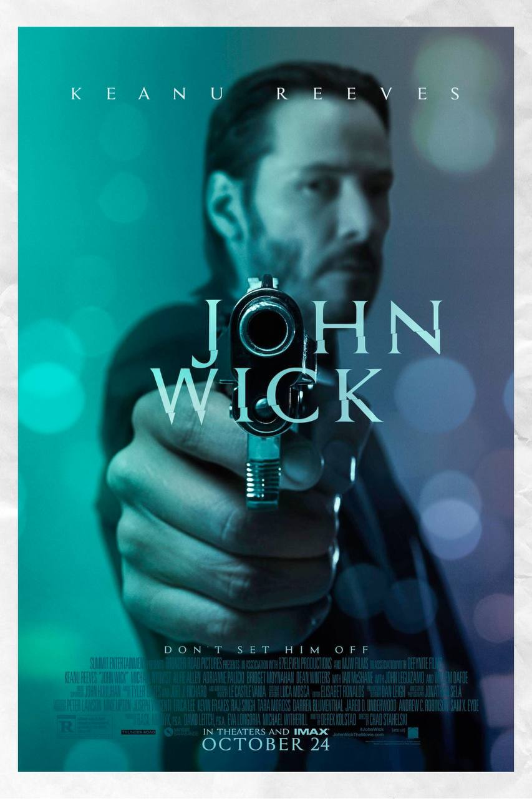

John Wick
"John Wick" follows the story of a retired hitman, John Wick, who is drawn back into the criminal underworld after the death of his beloved dog, a final gift from his deceased wife. The dog's murder, carried out by a gangster's son, reignites Wick's violent past as he seeks vengeance against those responsible. As Wick hunts down his enemies, he encounters various adversaries and allies, navigating a world where assassins operate under strict codes and alliances are fragile. With relentless action and a gripping storyline, "John Wick" is a thrilling ride through the shadowy realms of organized crime and revenge.
